Adhera — A Clinic-Partnered Platform for Weight Loss Adherence
UX Design, Product Strategy, AI Integration, Prototyping
Case Study • 2025
Setting the Scene
Adhera was designed to bridge the gap between weight loss patients and clinics.
While apps like MyFitnessPal or Noom focus on individual tracking, Adhera’s strength lies in its
clinic-backed approach that empowers doctors with real-time patient analytics while helping patients stay consistent.
I got the idea for this application while talking to my dad, who is a manager at a weight loss clinic, how treatment
times are prolonged, or how many patients relapse after finding success for a short time. A lot of this
is due to what happens outside of the clinic: nutrition and daily activity. Allowing these metrics to be shared with healthcare
professionals for monitoring, and the ability to easily document your activities, and motivational reminders will allow patients to
stay in track to their journey of health wellness.
“The low rate of primary care physicians who treat obesity is frequently attributed to limited time during office visits, lack of reimbursement, inadequate teaching materials, and poor training in nutrition or exercise counseling.” — The American Journal of Medicine
Problem Statement
Patients lack accountability and motivation between clinic visits, while clinics lack visibility into patient progress outside appointments.
User Personas
Patients
Want easy ways to track food intake, receive reminders, and share progress effortlessly with their doctor.
Clinics & Doctors
Need dashboards and adherence insights without additional workload, ensuring data-driven patient engagement.
The Solution
Adhera is designed as a connected ecosystem that bridges the gap between patient self-tracking
and professional clinical oversight. Unlike consumer apps that focus solely on individuals,
Adhera’s strength lies in its dual approach: empowering patients with easy-to-use tools while
giving clinics real-time analytics that enhance care without adding extra workload.

Calorie Tracking
Patients can log meals quickly by snapping a photo. Adhera’s AI then estimates calories,
portion sizes, and nutritional values. For greater accuracy, users can make manual adjustments
or log meals traditionally. This flexible approach reduces the friction of daily logging,
helping patients remain consistent over time.
Reminders
Unlike generic push notifications, Adhera provides smart, context-aware reminders.
These nudges adapt to a patient’s behavior whether it’s logging meals, drinking water,
or reviewing progress ensuring adherence feels supportive rather than intrusive. There will also
be reminders for visiting the clinic, exercise, or to stay under the caloric limit for the day.
Logging
Patients gain access to clean visualizations as they build profile over time.
These will visualize progress through trends and summaries.
Analytics
For clinics, Adhera transforms raw data into actionable insights. Real-time analytics
reveal patterns such as skipped logging, sudden calorie spikes, or steady improvements.
These insights allow doctors to intervene at the right moment, creating more personalized
and effective care plans. Clinic dashboards present adherence scores
and highlight at-risk patients, allowing providers to monitor multiple patients at a glance
without adding administrative burden.
Key Research Statistics
- About 50% of patients with chronic conditions do not adhere to treatment plans (WHO, 2003).
- The global digital health market is projected to reach $650B by 2025 (Statista, 2023).
- Mobile health apps can improve treatment adherence by 30–60% (Journal of Medical Internet Research, 2020).
Market & Business Opportunities
The global weight management market is valued at over $200B. Clinics seek digital tools that improve patient adherence and retention, while patients want sustainable, real-time guidance outside the clinic.
Clinics benefit from higher patient retention, patients from improved outcomes, and insurers from reduced healthcare costs. The SaaS model allows scalability through subscriptions and licensing.
Prototype
Here are the screens from the clinic side, analytics dashboard for doctors
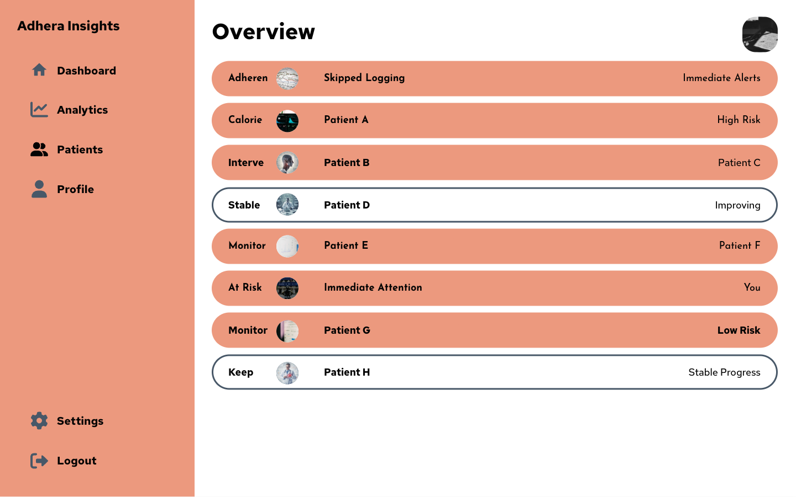
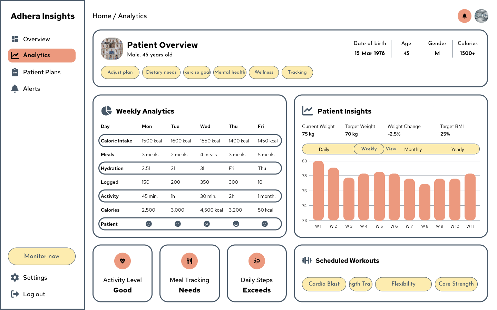
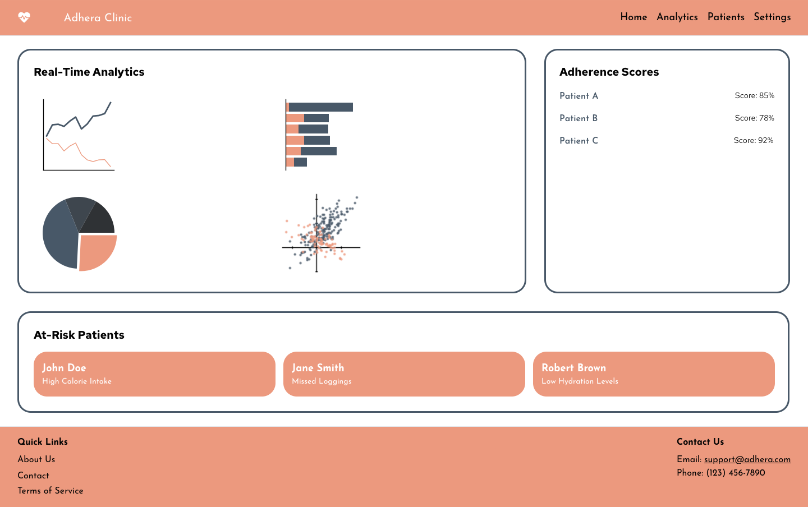
Below are selected screens from the Adhera prototype, showcasing the mobile experience.
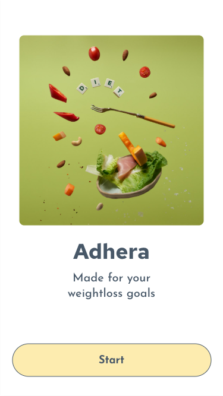
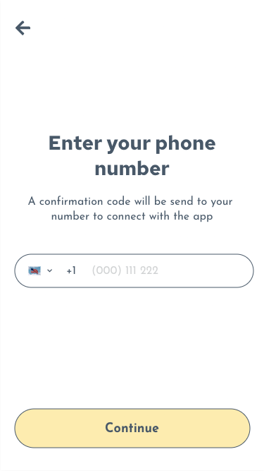
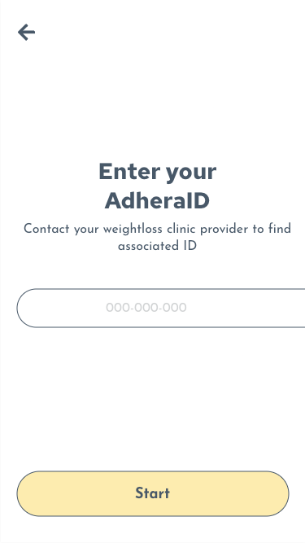
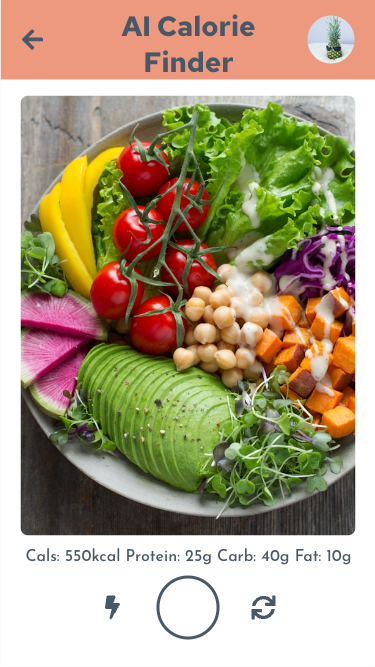
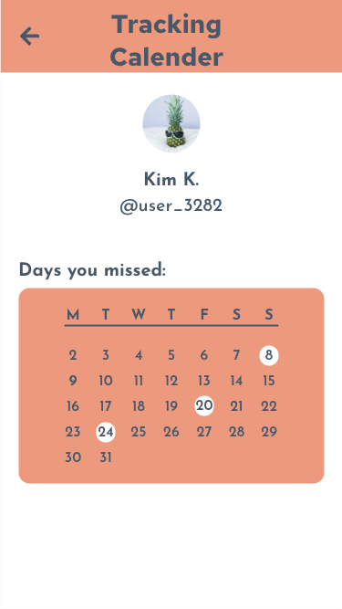
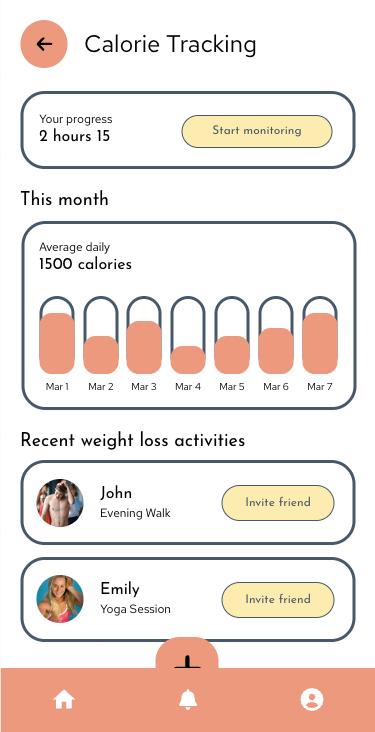
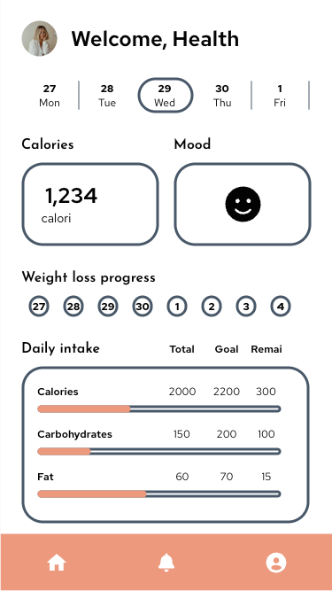
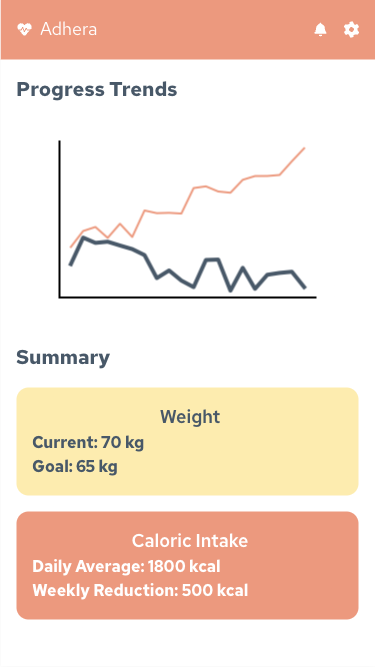
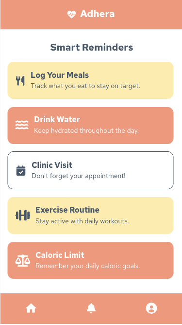
Reflection & Next Steps
Adhera taught me the importance of designing for both patients and clinics. Unlike consumer apps,
the value here lies in the relationship it strengthens. My biggest takeaway: data-driven engagement
can empower healthier outcomes when integrated seamlessly into existing workflows.
Next steps include integration with wearable devices, AI-driven personalized diet plans, multilingual support, and partnerships with wellness programs and insurance providers.